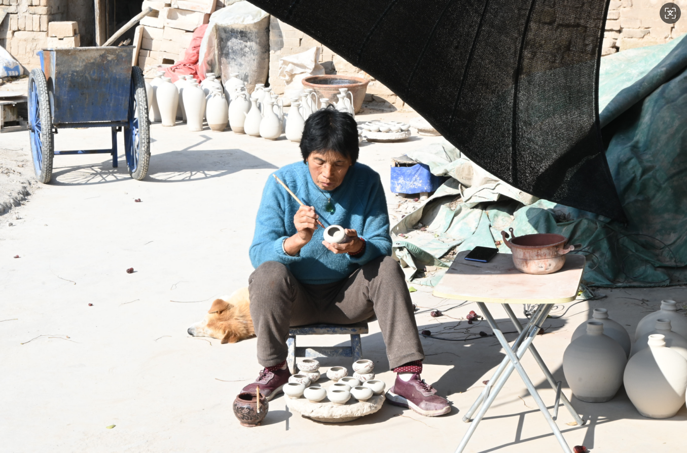

匠心传承，继往开来——洪山陶瓷的传承与发展
探寻洪山陶瓷在现代社会中的传承与创新之路
匠心代代相传——洪山陶瓷的传统工艺保护
洪山陶瓷的传统工艺是千百年来匠人智慧的结晶，其保护与传承对于洪山陶瓷的未来发展至关重要。
口传心授的匠人传承：在古代，洪山陶瓷的制作工艺主要依靠家族传承和师徒制度。匠人们通过口传心授的方式，将制作技艺代代相传。例如，洪山地区的李氏家族，至今已传承了五代陶瓷匠人，他们坚持用传统工艺制作陶瓷器物，确保了技艺的连贯性。
手工艺保护政策：近年来，山西省政府和文化机构高度重视传统手工艺的保护工作。2015年，洪山陶瓷被列入山西省非物质文化遗产名录，获得了政策和经济上的支持。为了更好地保护传统工艺，政府还设立了专门的陶瓷工艺传承基地。这些基地不仅为匠人提供了工作场所，还定期举办展览和交流活动，吸引更多人关注洪山陶瓷的传承。
非遗传承人制度：为了确保技艺的传承，洪山陶瓷工匠中涌现出多位非物质文化遗产传承人。例如，李师傅作为第五代传承人，不仅精通传统工艺，还积极培养年轻学徒，将制作技艺传授给下一代。
古法与新技——洪山陶瓷的创新之路
在现代社会背景下，洪山陶瓷的传承与发展面临着新的机遇与挑战。如何在保持传统工艺的基础上，融入现代技术与设计理念，成为了洪山陶瓷创新的关键。
现代设备的应用：近年来，洪山陶瓷工匠开始尝试将现代设备引入传统工艺中。例如，电动转盘、电子窑炉等设备的引入，不仅提高了生产效率，还提升了器物的精度和稳定性。
材料科学的应用：在原料选择上，现代材料科学的应用为洪山陶瓷的创新提供了新的可能性。例如，匠人们通过添加纳米材料，增强了釉面的光泽度和硬度；通过筛选高纯度陶土，提高了器物的细腻度。
设计理念的融合：洪山陶瓷工匠与现代设计师展开合作，将传统工艺与现代设计理念相结合。例如，现代陶瓶通过简约的造型和独特的釉色，吸引了年轻消费者的关注；而艺术陶壶则通过创新的造型和装饰手法，展示了洪山陶瓷的多样性。

传承匠心，培育新人——洪山陶瓷的人才培养
洪山陶瓷的可持续发展离不开新一代陶瓷工匠的培养。近年来，洪山陶瓷工匠积极探索人才培养的新模式，为传统工艺注入新的活力。
校企合作模式：洪山陶瓷工匠与本地高校展开合作，共同开设陶瓷工艺课程。例如，山西大学与洪山陶瓷工匠合作，设立了陶瓷工艺研究实验室，吸引了大量学生参与陶瓷制作的学习与研究。
非遗进校园活动：为了让更多人了解洪山陶瓷，相关机构组织了“非遗进校园”活动。例如，洪山陶瓷工匠多次走进中小学校园，为学生讲解陶瓷制作工艺，并指导他们动手制作简单的陶瓷器物。
在线教育平台：随着互联网技术的发展，洪山陶瓷工匠开始尝试通过在线平台传播工艺知识。例如，一些传承人通过短视频平台展示制作过程，吸引了大量年轻观众的关注和学习。

走向世界，传播文化——洪山陶瓷的国际影响力
洪山陶瓷不仅是山西文化的象征，更是中国传统手工艺的重要代表。近年来，洪山陶瓷通过多种形式的文化传播，逐渐走向世界，提升了国际影响力。
国际展览与交流：洪山陶瓷的多件作品在国际陶瓷展览中获奖，吸引了大量海外收藏家和文化爱好者的关注。例如，一件现代洪山陶瓶在法国巴黎的陶瓷展览中获得金奖，成为国际陶瓷艺术界的焦点。
文化交流项目：洪山陶瓷工匠积极参与国际文化交流项目。例如，洪山陶瓷工匠多次赴日本、韩国等东亚国家，与当地陶瓷艺术家展开交流，学习先进的设计理念和技术。
国际合作与推广：洪山陶瓷还通过国际合作，推动陶瓷文化的传播。例如，与法国艺术机构的合作为洪山陶瓷的国际化推广提供了重要平台。

市场与创新——洪山陶瓷的商业化发展
在现代商业环境下，洪山陶瓷的市场化发展是其传承与创新的重要保障。近年来，洪山陶瓷通过多种方式拓展市场，提升了品牌影响力。
精品化路线：洪山陶瓷工匠开始走精品化路线，针对高端消费市场推出限量版陶瓷作品。例如，一件精美的艺术陶壶售价高达数万元，吸引了大量收藏家的关注。
文化旅游融合：洪山陶瓷文化园的建设为陶瓷产品的市场化推广提供了重要平台。游客不仅可以参观陶瓷制作过程，还可以亲自体验制作陶瓷的乐趣，购买精美的陶瓷纪念品。
电商平台推广：随着电子商务的发展，洪山陶瓷工匠开始尝试通过电商平台推广产品。例如，淘宝、京东等平台上的洪山陶瓷旗舰店，吸引了大量年轻消费者的关注。

继往开来——洪山陶瓷的未来愿景
未来，洪山陶瓷将继续坚持传承与创新并重的发展理念，推动陶瓷文化的可持续发展。
加强人才培养与传承：通过多种形式的教育与培训，培养新一代的陶瓷工匠，确保传统工艺不断代。
推动技术创新与设计：将现代技术与设计理念融入传统工艺，推出更多兼具实用性和艺术性的陶瓷作品。
提升国际影响力：通过国际展览、文化交流等形式，推动洪山陶瓷的国际化传播，提升品牌影响力。
拓展市场与商业化发展：通过精品化路线、文化旅游融合等方式，推动洪山陶瓷的市场化发展，提升品牌竞争力。
我们相信，洪山陶瓷不仅是山西文化的瑰宝，更是连接过去与未来的桥梁。在新时代背景下，洪山陶瓷将继续焕发出新的生机与活力，为中国传统文化的复兴贡献力量。